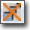

UDN
Search public documentation:
CascadeUserGuide
日本語訳
中国翻译
한국어
Interested in the Unreal Engine?
Visit the Unreal Technology site.
Looking for jobs and company info?
Check out the Epic games site.
Questions about support via UDN?
Contact the UDN Staff
中国翻译
한국어
Interested in the Unreal Engine?
Visit the Unreal Technology site.
Looking for jobs and company info?
Check out the Epic games site.
Questions about support via UDN?
Contact the UDN Staff
UE3 Home > Unreal Editor and Tools > Unreal Cascade User Guide
UE3 Home > Particle & Effects > Particles Systems > Unreal Cascade User Guide
UE3 Home > FX Artist > Unreal Cascade User Guide
UE3 Home > Particle & Effects > Particles Systems > Unreal Cascade User Guide
UE3 Home > FX Artist > Unreal Cascade User Guide
Unreal Cascade User Guide
Overview
Opening Cascade
Cascade Interface
- Menu Bar - Visualization and navigation tools.
- Tool Bar - Visualization and navigation tools.
- Preview Pane - Shows the current particle system (including all emitters contained in that system). Controls in the Sim toolbar options set simulation speed.
- Emitter List - This pane contains a list of all emitters in the current particle system, and a list of all modules within those emitters.
- Properties Pane - This pane allows the properties of the current particle system, particle emitter, or particle module to be viewed and modified.
- Curve Editor - This graph editor displays any properties that are being modified over either relative or absolute time. As modules are added to the graph editor, there are controls for which to display (discussed later in this document).
Menu Bar
Edit
- Regenerate lowest LOD - Regenerates the lowest LOD by using values that are a preset percentage of the highest LOD's values.
- Save Package - Saves the package containing the particle system.
View
- View Origin Axes - Toggles the display of the axes markers at the world origin of the preview pane.
- View Particle Counts - Toggles display of paticle count stats for each emitter in the particle system in the preview pane.
- View Particle Event Counts - Toggles display of particle event stats for each emitter in the particle system in the preview pane.
- View Particle Times - Toggles display of particle time stats for each emitter in the particle system in the preview pane.
- View Particle Distance - Description needed.
- View Geometry - Toggle display of a stand-in static mesh in the preview pane. Can be useful for testing certain emitter effects such as collision.
- View Geometry Properties - Opens the properties window for the stand-in geometry allowing you to modify its properties and change the mesh being used.
- Save Cam Position - Saves the viewpoint from the preview pane's camera out as the thumbnail for the particle system in the Content Browser.
- Save Motion Radius - Description needed.
Window
- Properties: - Toggles the display of the Properties Pane.
- Unreal Curve Editor: - Toggles the display of the Curve Editor.
- Preview: - Toggles the display of the Preview Pane.
Tool Bar
There is also a toolbar, as shown below: The toolbar contains the following controls (from left to right on the toolbar):| Icon | Name | Description |
|---|---|---|
| Restart Sim | This will reset the simulation in the preview window. | |
| Restart in Level | This reset the particle system, and any instance of the system in the level. | |
| Find in Content Browser | Opens the Content Browser and selects the current particle system. | |
| Save Thumbnail Image | Saves the viewpoint from the preview pane's camera out as the thumbnail for the particle system in the Content Browser. | |
| Toggle Orbit Mode | Toggle the preview viewport camera between orbiting around the particle system or free-moving. | |
| Toggle Motion | Toggle the effect of any motion from modules on emitters. | |
| Change view mode | Cycles the viewmode used in the preview pane. | |
 | Toggle Bounds | Toggles the display of the particle system's current bounds in the preview pane. |
| Toggle PostProcess | Toggles the use of the cascade post process chain in the preview pane. | |
| Toggle Grid | Toggles the display of the grid in the preview pane. | |
| Play | Play the simulation in the preview viewport. | |
| Pause | Pause the simulation. | |
 | Set sim speed | Cycles through the available sim playback speeds. |
| Toggle Loop System | For emitters not set to loop, this will force them to in the preview viewport. | |
 | Toggle Realtime | Realtime preview of emitters in the preview viewport. |
| Background Color | Allows the user to change the background color of the preview viewport. | |
| Toggle Wireframe Sphere | ||
| Undo | Undo the last operation performed. | |
| Redo | Redo the last undone operation. | |
| Regenerate lowest LOD duplicating highest | Regenerates the lowest LOD by duplicating the highest LOD. | |
 | Regenerate lowest LOD | Regenerates the lowest LOD by using values that are a preset percentage of the highest LOD's values. |
| Jump to Highest LOD Level | Loads the highest LOD. | |
| Jump to Higher LOD Level | Loads the next higher LOD from the current one. | |
| Add LOD before current | Adds a new LOD before the currently loaded LOD. | |
| Add LOD after current | Adds a new LOD after the currently loaded LOD. | |
| Jump to Lower LOD Level | Loads the next lower LOD. | |
| Jump to Lowest LOD Level | Loads the lowest LOD. | |
|  | Delete LOD | Deletes the currently loaded LOD. |
Preview Pane
The preview pane gives you a rendered preview of the current particle system just as it would appear when rendered in-game. It provides realtime feedback of changes made to the particle system in Cascade. In addition to the fully rendered preivew, the preview pane can also render in unlit, texture density, overdraw, and wireframe viewmodes and show information such as the current bounds of the particle system.Emitter List
The emitter list contains each particle emitter contained within the particle system being edited in Cascade. It is a horizontal listing of all the emitters where each column represents a single particle emitter contained in the system. Each column is made up of an emitter block, followed by any number of module blocks. The emitter block is shown below: The following buttons are displayed on the emitter block (left to right): / This button will enable/disable emitter. The first image is displayed when the emitter is enabled, the second when disabled. It is important to note that when disabled, the emitter will not have Tick or Render called on it. The middle button is the rendering mode for the emitter. Clicking it will switch to the next rendering mode available. The following icons are supported:| The emitter should render normally. | |
| The emitter should render wire-crosses at the positions of the particles. | |
| The emitter should render points at the positions of the particles. | |
| The emitter should not rendered at all. |
Curve Editor
Adding a module to the graph
Adding a module to the Graph Editor is very simple. The green box that appears on the left side of a module will add that module to the graph editor. The color of the module that appears in the Graph Editor is determined randomly when the module is created. To change this, open the Cascade set of properties in the Property window for the module you want to modify, and set the color there.Manipulating the graph
The yellow box that appears to the right of the entry in the Graph Editor toggles rendering the splines for that module. Right clicking on one of these entries will allow you to remove it from the graph.Creating points on the graph
Note that you need to make sure the Distribution you are modifying is a 'curve' type (eg DistributionFloatConstantCurve) before you can add multiple points etc. To create points in the Graph Editor, ctrl-left click on the spline for the value you want. The easiest way to do this is by turning off all the other modules by using the checkbox discussed above. All modules start at 0 with a single key at time 0. Ctrl-Left clicking on the spline anywhere in the timeline will create a point there. This point can be dragged around at will, but as discussed above if the spline represents a vector (XYZ) then it will move all 3 keys for that vector in time but not in value. Right clicking on a keypoint will bring up a menu and let you manually enter the Time or Value of that keypoint. If its a key in a color curve, it will also let you select its color using the color picker. If the module is ColorOverLife, then the splines rendered will reflect the current color at that time, while the points will be colored to reflect the particular channel for that spline. See the Curve Editor User Guide page for more details.Properties Pane
The properties pane contains a standard UnrealEd properties window (minus the advanced search and favorites features). The properties displayed in this pane depend on what is currently selected in Cascade. If nothing is selected (or if the particle system itself is selected, i.e. through the context menu in the emitter list), then the properties of the particle system itself are shown. If a particle emitter is selected, meaning the emitter block, then the properties of that specific particle emitter are displayed. If a particle module is selected, the properties for that particular particle module are displayed.Controls
Mouse Controls
Movement controls for Cascade are as such: In the Preview pane, left mouse button rotates the scene around the particle system center, right mouse button will zoom in and out. In the Emitter pane, left-clicking on an emitter or module will select that emitter. Left-click dragging on a module will move that module wherever it is dropped, provided there is an emitter under it. This can be used to drag a module up or down in a stack, or to another emitter. Right-click will open up a context-sensitive dialog for creating a new emitter (clicked on empty space), creating a new module (clicked on empty space within an emitter), deleting a module (clicked on a module name), or deleting an entire emitter (clicked on the main emitter module at the top). Shift-left click and drag will instance a module between emitters, which is expressed as a + next to the module name, and the modules will share the same color. Ctrl-left click and drag will copy a module from the source emitter to the target one. Middle-mouse click and drag will pan around in the Emitter pane. With an emitter selected in the Emitter pane, using the left/right arrow keys will alter its place in the order of the overall particle system. Emitters are updated and rendered by the particle system in the left-to-right order they appear in Cascade. In the Properties pane, left-click selects fields or opens rollouts for properties. In the Graph view, the controls change depending on what mode you are in. There are two modes for manipulating the Graph view, these are: Pan Mode: Left-click drag will move the view around, mousewheel zooms in and out uniformly. Zoom Mode: Left-click drag will scale the graph vertically, right-click drag will scale the graph horizontally. If a spline already exists in the graph, then left-clicking anywhere on that spline will create a key at that point. Keys can be moved by left-click dragging them, but in a module with multiple values being graphed (such as RGB for Color Over Lifetime) anytime a key is created, a key is added to the other splines of that module. These keys will always be kept at the same time as the others, so if the key for Red is moved forward or backwards in time, the keys for Green and Blue will be moved horizontally as well (but not vertically). The other two buttons in the Graph view are Fit buttons. The button on the left will zoom and pan the view to the horizontal extents of the currently visible splines, and the button on the right will do the same on the vertical axis.Creating a Particle System
Creating a Sprite Emitter
Basic Emitter Options
Creating Modules
Copying Emitters
Modules
Module Information
If you change a property to a distribution type that changes over time, some modules use 'relative time' and some use 'absolute time' (more on distributions below).- Absolute time is basically the containing emitter time. If you have an emitter set up for 3 loops of 2 seconds, Absolute time for modules in that emitter will run from 0 to 2 seconds three times.
- Relative time is between 0 and 1, indicating the the lifetime of each particle.
Module Interaction
Modules interact with each other based on their location in the stack within an emitter. For example, creating an emitter with an Initial Location of Min(x=2, y=2, x=2), Max(x=-2, y=-2, z=-2) will spawn the particles in a very small box, then an Initial Velocity with the StartVelocityRadial set to 100 Min and Max will cause the particles to move away from the center of the box. Adding another Initial Location with Max and Min values of 100 for X, Y, and Z will move the entire emitter 100 units away in all directions, but the particles will still move away from the center of the newly located box. Moving the second Initial Location module above the Initial Velocity module will cause the particles to move away from the origin of the system rather than the location offset.Distribution Types
See the Distributions Reference page for more details.Particle System Level of Detail (LOD)
Cascade LOD Controls
The following section of the Cascade toolbar covers the LOD controls. Cascade LOD Controls A break down of each control follows.
Jump to Highest LOD Button
When the Jump to Highest LOD button is pressed, the system will be set to the highest available static LOD.
Jump to Higher LOD Button
When the Regen Lowest LOD button is pressed, the particle system will remove all existing lower LOD levels and regenerate a new the lowest.
Regenerate Lowest LOD Duplicating Highest Button
When the Regenerate Lowest LOD Duplicating Highest button is pressed, the particle system will remove all existing lower LOD levels and regenerate a new the lowest that is an exact copy of the highest level.
Delete LOD Button
When the Delete LOD button is pressed, the currently selected static LOD level will be deleted from the particle system.
A break down of each control follows.
Jump to Highest LOD Button
When the Jump to Highest LOD button is pressed, the system will be set to the highest available static LOD.
Jump to Higher LOD Button
When the Regen Lowest LOD button is pressed, the particle system will remove all existing lower LOD levels and regenerate a new the lowest.
Regenerate Lowest LOD Duplicating Highest Button
When the Regenerate Lowest LOD Duplicating Highest button is pressed, the particle system will remove all existing lower LOD levels and regenerate a new the lowest that is an exact copy of the highest level.
Delete LOD Button
When the Delete LOD button is pressed, the currently selected static LOD level will be deleted from the particle system.